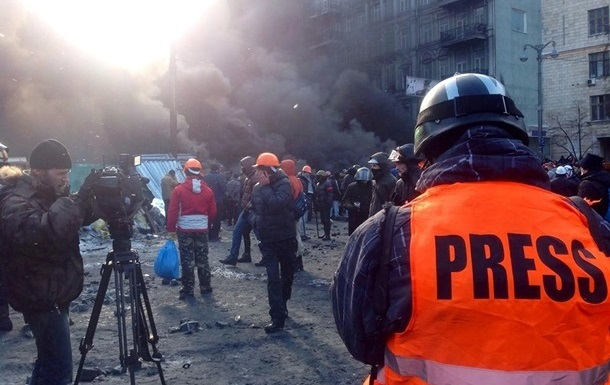

Our team is making reports 25/8 for you. We work in office, studio, in the fields, etc. We are the Media. Media is the very source of mass communication. Media plays the most informative role in our society. It is the main thing of mass communication. It has various forms, such as the internet, through which we can get updated news about the world in our grab just with a click of a finger.

Field reporters are the people you see on TV or read about in the news who cover breaking stories as they happen. They're often the “first responders” to major events, such as natural disasters, protests, and other situations where there is an immediate need for information. They are ready to lose their lives trying to tranfer you the latest information.

A professional journalist's job revolves around researching, writing and reporting news stories. As a journalist you may be assigned general news topics or you may work in various specialty areas such as politics, celebrity news or sports. Much of your job will involve traveling to local or distant destinations to gather information for a story. You may have to interview people to gather facts or get firsthand accounts of an event. Deadlines are a regular part of the job, and journalists frequently work odd hours and weekends.